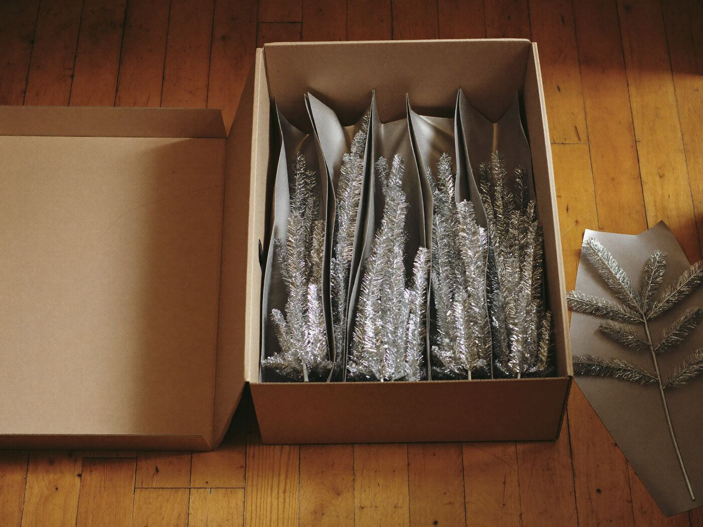
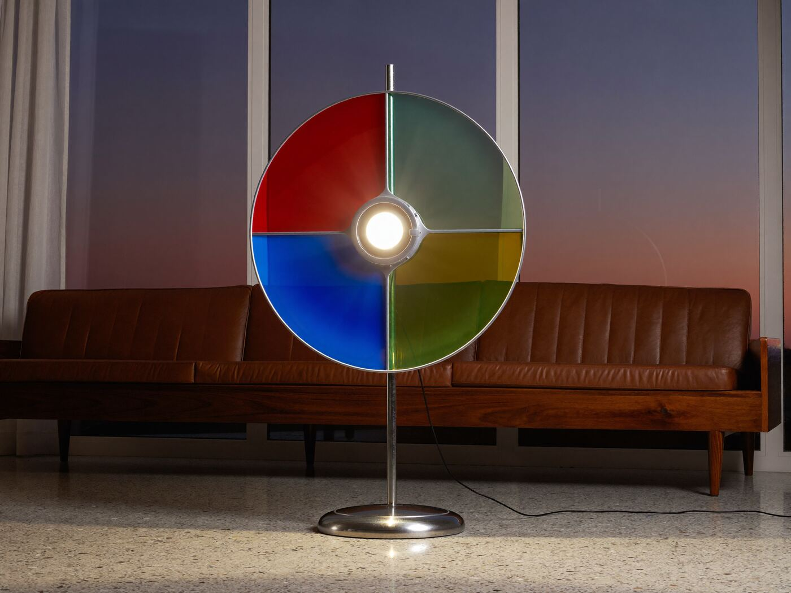

Stories · Tinsel trees
The tree you couldn’t string lights on
Aluminum trees conduct electricity, so they got a spinning color wheel instead.

In the early sixties, the most modern thing you could put in your living room at Christmas was a tree made of aluminum. It didn’t shed, it didn’t need water and it didn’t look anything like a tree. That was more or less the point.
From the pots-and-pans factory
The best known of them, the Evergleam, came from Manitowoc, Wisconsin, where the Aluminum Specialty Company made cookware. Its first trees went on sale in 1959, and for a few seasons they sold in huge numbers. Putting one up was a ritual. Each branch came out of its own paper sleeve and went into a hole drilled in the pole, row by row, from the bottom up, until you had a shimmering silver cone in the corner of the room.

Why no lights
Here’s the catch. A tree made of metal conducts electricity very well, and a string of old Christmas lights with worn wires is a good way to electrify one. So the advice was simple: no electric lights on the tree.
Instead you put a color wheel on the floor. It was a spotlight shining through a slowly turning disc of colored panels, usually red, blue, green and amber, so the whole tree changed color every few seconds. Ornaments were allowed, usually plain glass balls in a single color. The effect was less “cozy cabin” and more “lounge act,” which suited a Palm Springs living room perfectly.

Less “cozy cabin,” more “lounge act.”
What happened next
In 1965, A Charlie Brown Christmas aired and spent a good part of its half hour mocking shiny aluminum trees next to one scrappy real one. Sales dropped soon after, and by the end of the decade most aluminum trees had gone up to the attic or out to the curb.
They came back, of course. Vintage trees now sell to collectors, especially the rarer colors and the “pom-pom” styles with a fluffy tuft on the end of every branch. If you find one, count the branches, check for the sleeves and, whatever you do, don’t string lights on it.